| Киноподборки |
Комедии:
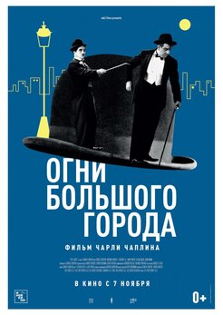
Среди величайших комедий всех времён эта занимает особое место. Это не просто фильм, где много юмора, который не стареет.
Это кино благородное, красивое, мелодраматичное, сатирическое, даже в чём-то политическое.
Не случайно во всех серьёзных рейтингах профессионалы до сих пор ставят её не первое место.
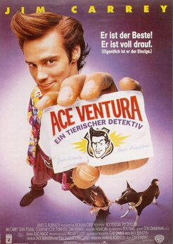
Розыск домашних зверюшек – дело, требующее особых качеств. У Эйса Вентуры они все есть. Он любит животных больше, чем людей,
и животные почти всегда отвечают ему взаимностью. А людям просто круто достаётся от наглого шутника в цветной рубахе нараспашку.
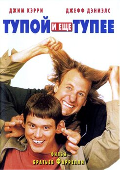
Одна из лучших ролей Джима Керри, хотя многие шутки здесь на грани фола. Например, его герой убил попугая и прикрутил изолентой
его голову к телу, чтобы хозяин попугая, слепой мальчик, ничего не понял. От такого юмора иногда становится не по себе, но оторваться от этой комедии невозможно.
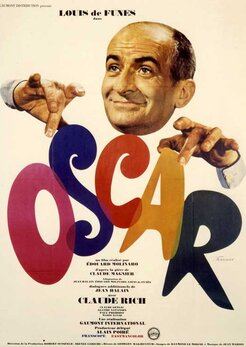
Среди других ролей Луи де Фюнеса эта стоит особняком. Дело в том, что «Оскар» больше похож на телеспектакль, и такой формат даёт великому комику
возможность оторваться по полной. Результат не заставляет себя долго ждать: весь фильм вы будете хохотать без остановки.
К счастью, советский дубляж выполнен настолько блестяще, что даже усиливает ощущения.
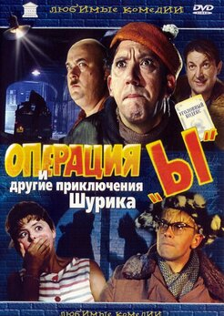
Три новеллы о незадачливом студенте Шурике стали суперхитом, как, впрочем, и многие другие фильмы Леонида Гайдая. Причём если первая
и третья новеллы – сатирические комедии, то вторая – комедия эротическая, с раздеванием и многим другим.
Советские зрители были потрясены, а цензуре оставалось только злиться в бессилии.
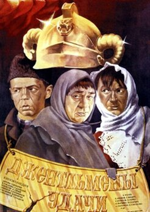
Одна из лучших советских комедий, которая не просто разошлась на цитаты, но попросту поменяла язык людей, все стали разговаривать выдуманным для фильма языком «блатных»:
как уличили авторов картины, настоящий воровской мир говорил иначе и выражения использовал иные. Когда фильм меняет язык – это что-то значит, век воли не видать.
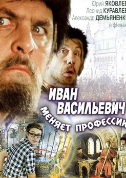
Михаил Булгаков в СССР был фигурой полузапрещённой, его самиздатовские книги зачитывали до дыр тайком, и вдруг – всесоюзный хит по его пьесе, пусть и не слишком известной.
Конечно, всё осовременено и значительно переделано, но всё же булгаковский текст здесь узнаётся очень легко. Подумайте об этом, когда будете пересматривать.
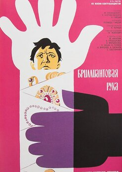
«Наши люди в булочную на такси не ездят», - это ведь и до сих пор так. Мало что изменилось с момента выхода гайдаевской комедии, если подумать.
И контрабанду народ возит, и организованная преступность работает, и наивные чудаки иногда оказываются настоящими мужчинами и героями. Поэтому фильм и любят до сих пор.
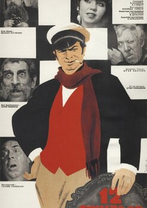
Стоит сказать, что фильм Гайдая был не первой экранизацией знаменитого произведения Ильфа и Петрова. Мэл Брукс успел выпустить свою картину раньше.
Впрочем, в СССР об этом всё равно никто не знал, а вот Арчил Гомиашвили в роли Бендера сразу стал иконой и главным воплощением великого комбинатора, потому что Сергей Юрский был более аристократичным и загадочным.
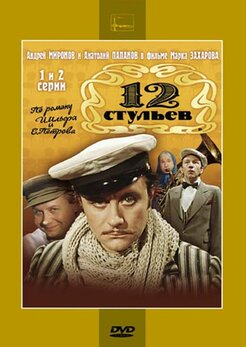
Версия Марка Захарова на правах более поздней могла позволить себе постмодернистские ходы, остранение и откровенно театральную эстетику. Как ни странно, элитарный язык не помешал фильму стать всенародно любимым.
То ли Андрей Миронов был настолько обаятелен, то ли народ – умнее.
|
Боевеки:
Огромный Дуэйн Джонсон и смешной Кевин Харт. Этого уже достаточно для создания популярного комедийного боевика,
кассового хита, где Скала Джонсон опять пытается шутить - и это уже очень смешно.
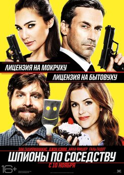
Сто раз уже был в кино сюжет о супружеской паре спецагентов под прикрытием. И каждый раз это всё равно смешно.
Поэтому и на сто первый вариант зрители нашлись, причём, кажется, не разочаровались.
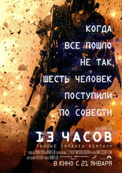
Ливия, террористы, зловещий преступный план. Из всех военнослужащих на Земле есть только шесть спецназовцев,
которые способны помешать преступникам уничтожить американское посольство. И они сделают это даже ценой жизни.
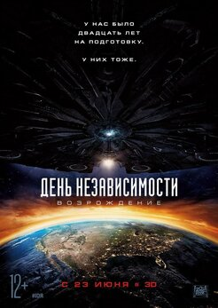
Марсиане опять напали. Мы готовились 20 лет, мы изучили их вооружение, сами много всего построили на базе их технологий,
но они всё равно устроят на Земле бойню. Но найдутся герои, которые опять всех спасут.
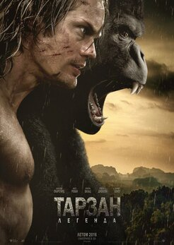
Он хотел стать цивилизованным человеком, он сделал всё, чтобы забыть Африку, но теперь он снова нужен в джунглях.
Нужны его сила, ярость и узловатые руки, которые никогда не будут такими, как у обычных людей.
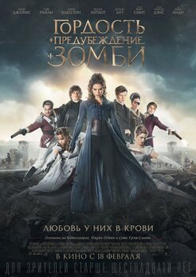
Как можно из истории любви, рассказанном в классическом романе Джейн Остин, сделать зубодробительный боевик про зомби, понять невозможно.
Но боевик есть, и мистер Дарси расправляется с полчищами зомби не менее уверенно, чем блещет остроумием в высоком обществе.
 Никто не мог ждать ничего хорошего от очередной экранизации по мотивам компьютерных игр.
Тем приятнее было удивиться. Боевик получился очень качественным, неглупым, сложным и красивым. Настолько, что захотелось поскорее дождаться продолжения.
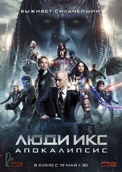
Древний мутант Апокалипсис встал на пути Людей Икс. Если у вас от этих слов не повышается уровень адреналина в крови, фильм лучше пропустить.
Это только для посвящённых.
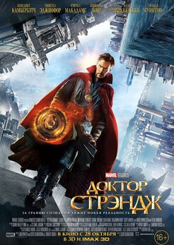
Людям обещали, что это будет необычный блокбастер по комиксам. Что это будет почти интеллектуальный триллер, что даже сам герой будет очень особенный.
Первую треть фильма создатели всё ещё вели зрителя по ложному следу, но потом началось то, за что все и любят марвеловские боевики: взрывы, драки одна за другой,
пафосные фразы и долгий финальный бой, исход которого предрешён заранее. Но публике всё равно понравилось.
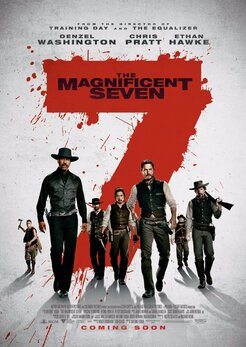
У фильма не так много общего с оригиналом, зато типажи здесь очень разношёрстные и стрельбы много.
Что ещё нужно для боевика с местом действия на Диком Западе? Ничего не нужно. Фильм это убедительно доказал.
Никто не мог ждать ничего хорошего от очередной экранизации по мотивам компьютерных игр.
Тем приятнее было удивиться. Боевик получился очень качественным, неглупым, сложным и красивым. Настолько, что захотелось поскорее дождаться продолжения.
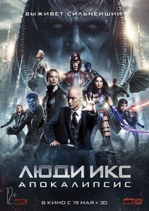
Древний мутант Апокалипсис встал на пути Людей Икс. Если у вас от этих слов не повышается уровень адреналина в крови, фильм лучше пропустить.
Это только для посвящённых.
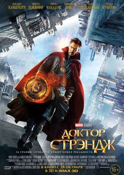
Людям обещали, что это будет необычный блокбастер по комиксам. Что это будет почти интеллектуальный триллер, что даже сам герой будет очень особенный.
Первую треть фильма создатели всё ещё вели зрителя по ложному следу, но потом началось то, за что все и любят марвеловские боевики: взрывы, драки одна за другой,
пафосные фразы и долгий финальный бой, исход которого предрешён заранее. Но публике всё равно понравилось.
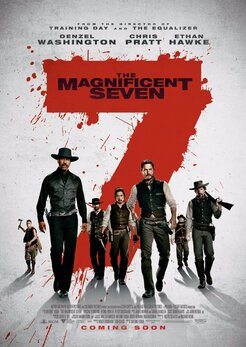
У фильма не так много общего с оригиналом, зато типажи здесь очень разношёрстные и стрельбы много.
Что ещё нужно для боевика с местом действия на Диком Западе? Ничего не нужно. Фильм это убедительно доказал.
|
Фэнтези:
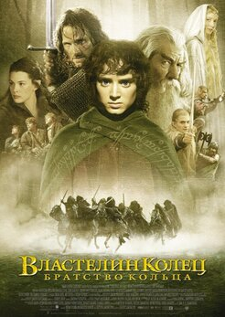
Пожалуй, самое первое название, приходящее на ум при упоминании фэнтези - «Властелин колец». Первая часть киноэкранизации романа английского лингвиста, переводчика, писателя, филолога Джона Рональда Руэла Толкиена вышла на экраны в далёком 2001 году, но и по сей день киносерия Питера Джексона остаётся одним из лучших образцов своего жанра. Помимо всего прочего, фильмы франшизы в своё время по-настоящему прославили таких выдающихся молодых актёров, как Элайджа Вуд, Лив Тайлер и Орландо Блум. Вне всякого сомнения, каждый из фильмов трилогии заслуживает пристального внимания даже несмотря на свой внушительный хронометраж.
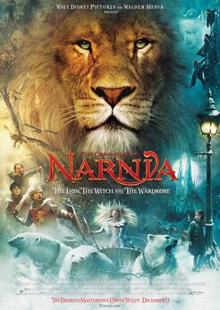
Самое начало Второй мировой войны, немецкие бомбардировщики активно бомбят крупные города Великобритании. Опасаясь за своих детей, миссис Певенси отправляет их к другу семьи - профессору Дигори Кёрку, живущему в небольшой деревне. Четверо сорванцов грустят по дому и часто вспоминают о маме, пока однажды не находят нечто невероятное: в одной из комнат ребята обнаруживают старый шкаф, через который можно попасть в волшебную страну Нарнию. Там они знакомятся с говорящим львом и становятся участниками сопротивления, сражающегося с Белой колдуньей. Картина, также положившая начало трилогии, является экранизацией произведения ирландского
писателя Клайва Стейплза Льюиса. В киносерии появляются Тильда Суинтон, Джеймс МакЭвой, Джим Бродбент, Бен Барнс, Питер Динклэйдж и многие другие.
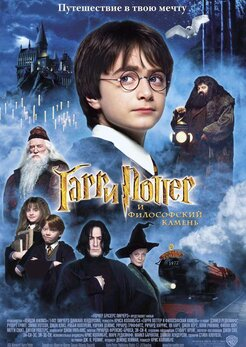
«Поттериана» - современная литературная и киноклассика. Первый роман Джоан Роулинг «Гарри Поттер и философский камень» был опубликован в 1997 году, двадцать лет назад, а в 2001 году на экраны вышла его экранизация. Всего франшиза насчитывает восемь фильмов о приключениях юного волшебника и один спин-офф - «Фантастические твари и где они обитают», который также было решено превратить в киносерию. История Гарри начинается, когда его родителей убивает Лорд Волан-де-Морт, самый сильный и зловещий маг всех времён. Малыш попадает в семью своей тётки, которая терпеть не может магию и скрывает от Гарри,
что он наделён сверхъестественными способностями. Но вскоре ребёнок сам открывает, что может понимать язык животных и заставлять исчезать разные предметы просто силой своего воображения.
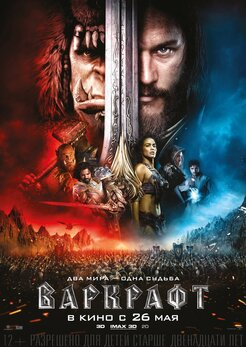
Экранизация популярнейшей компьютерной игры, снятая режиссёром Дунканом Джонсом. В Азероте грядет война. Возглавляемая людьми цивилизация сталкивается с грозной расой захватчиков - с орками, бегущими из их умирающего мира, Дренора. Когда Тёмный портал открывается, чтобы соединить два мира, люди сталкиваются с разрушениями, в то время как орки находятся на грани вымирания. Лидер людей Андуин Лотар и возглавляющий орков Дуротан готовы пойти на все, чтобы спасти свои семьи и свои народы… В фильме снялись Трэвис Фиммел, Пола Пэттон, Бен Фостер, Доминик Купер и Тоби Кеббелл. Возможно, что за этой лентой последует и продолжение.
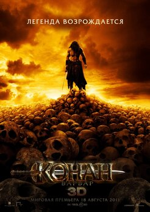
Он родился в разгар самой кровопролитной войны Хайборийской эры прямо во время сражения. Природа одарила его великой силой. Прославленный воин-киммериец Конан отправился в путешествие, дабы восстановить справедливость и отомстить за гибель отца. Но поиски врага, начавшиеся как личная вендетта, становятся эпохальной битвой во имя спасения народов Хайбории от безумного тирана Халар Зима, жаждущего властвовать над жизнью и смертью. Только герой, прозванный в народе Конаном-варваром, способен победить жестокого царя. Главную роль исполнил Джейсон Момоа, звезда сериала «Игра престолов».
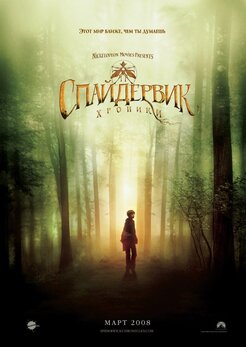
Рядом с людьми живут незримые существа. Те, кто разуверился в чудесах, зовут их сказкой. Но люди с открытым сердцем и взглядом знают волшебный народ. Таким был и Артур Спайдервик. Он собрал все свои знания, систематизировал и поместил в книгу. Спустя восемьдесят лет после её написания, в дом, где хранится диковинная энциклопедия, заселяется семейство Грейс. Юный Джаред обнаруживает замурованный кабинет на втором этаже, а в нём - ту самую книгу. Мальчик впитывает знания, но зло не дремлет. Огр Мульгарат, следуя своим страшным планам, желает непременно заполучить артефакт.
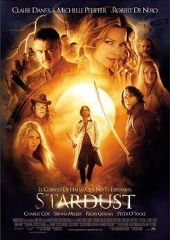
Экранизация повести Нила Геймана. Сверхъестественная, иная вселенная, наполненная волшебством и магией, совсем близко. От крохотной деревеньки её отделяет лишь стена, нарушать пределы которой нельзя ни в коем случае. Но когда речь идёт о бахвальстве перед первой местной красоткой, разве может что-то удержать юношу от запретов? Главный герой, Тристан Торн, обещает прекрасной девушке подарить звезду, которая упала за запретной чертой. Чтобы доказать свою мужественность, паренёк смело отправляется в путь, попадая в удивительный круговорот небывалых приключений, не зная, что именно ждёт
его в погоне за звездой. Главные роли в картине сыграли Клэр Дэйнс, Мишель Пфайффер, Роберт Де Ниро, Марк Стронг, а также талантливый дебютант Чарли Кокс, сегодня известный любому поклоннику комиксов Marvel как исполнитель роли Сорвиголовы в одноимённом сериале.
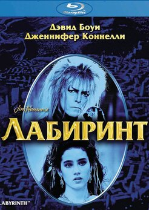
Молодая девушка Сара (Дженнифер Коннелли) была оставлена дома одна, чтобы присмотреть за младшим братом Тоби. Недовольная этим фактом, Сара начала рассказывать вечно плачущему брату волшебную историю, случайно вызвав Короля гоблинов (Дэвид Боуи), который выкрал маленького Тоби. Понимая, что совершила ужасную ошибку, Сара отправляется в замок Короля гоблинов, который находится в самой середине лабиринта. Надо непременно спасти брата до полуночи, иначе ребёнок сам станет гоблином.
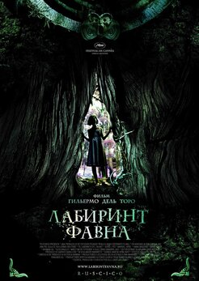
Трогательная история с множеством смыслов от режиссёра Гильермо дель Торо. Действие фильма разворачивается в Испании в 1944 году. Офелия - десятилетняя девочка, которой пришлось вместе со своей беременной мамой переехать в военный лагерь, где служит её отчим, капитан Видаль. Он является офицером фашистской армии и должен очистить территорию от группы повстанцев.Погружённая в свои фантазии и увлечённая сказками, девочка обнаруживает неподалёку от лагеря старинный лабиринт, который давным-давно заброшен. В лабиринте Офелия встречает хозяина подземелья - Фавна, который способен открыть ей дорогу в волшебное королевство.
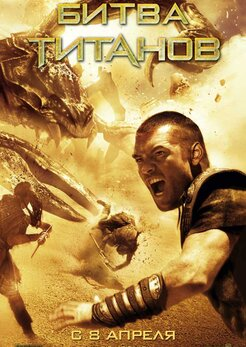
Принцесса Андромеда – дочь короля Цефея, который одержал победу над богами. Мстительный бог подземного мира Аид требует, чтобы Андромеда была принесена в жертву, иначе он выпустит Кракена, который начнёт уничтожать город за городом. В отчаянии король Цефей просит полубога Персея найти способ победить Кракена. Персей принимает вызов, потому что именно Аид ответственен за смерть его семьи. Герой узнает, что единственный способ победить монстра – это голова Медузы Горгоны. В ролях - Сэм Уортингтон, Мадс Миккельсен, Джемма Артертон, Рэйф Файнс, Лиам Нисон и Джейсон Флеминг.
|